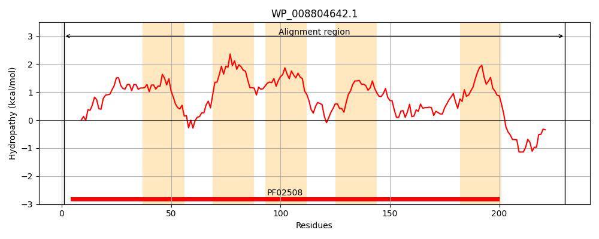
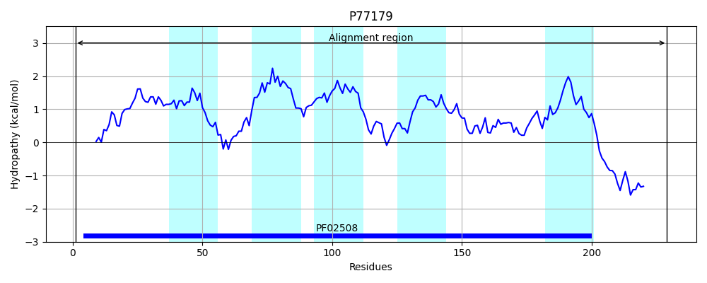
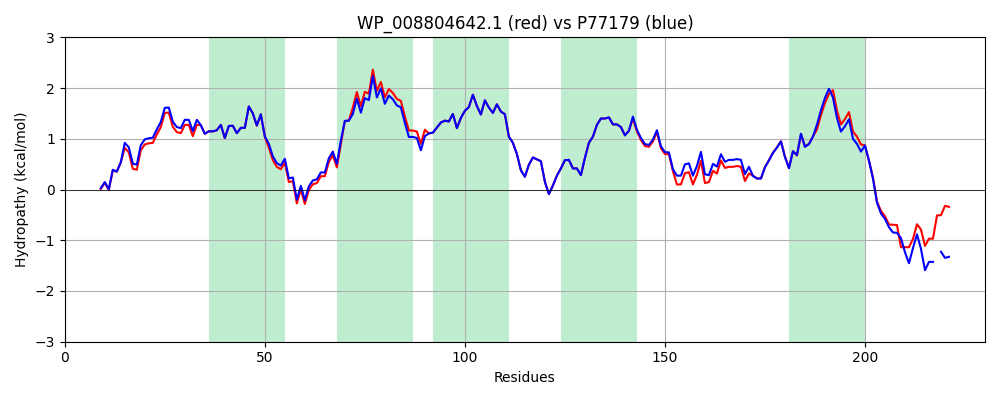

Hit Accession: P77179
Hit TCID: 3.D.6.1.4
Hit Description: gnl|BL_ORD_ID|11484 gnl|TC-DB|P77179|3.D.6.1.4 Electron transport complex subunit RsxE OS=Escherichia coli (strain K12) GN=rsxE PE=1 SV=1
Mach Len: 230
e:0.000000
Query TMS Count : 5
Hit TMS Count: 5
TMS-Overlap Score: 5.000000
Predicted Substrates:CHEBI:5584;hydron
BLAST Alignment:
Score: 1033 , Bit scores: 402 bits, E-value: 1.6e-144, Alignment length: 230, Percentage identity: 90
Query: 1 MSEVKDVIVQGLWKNNSALVQLLGMCPLLAVTSTATNALGLGLATTLVLTLTNLTISSLRRWTPAEIRIPIYVMIIASVVSVVQMLINAYAFGLYQSLGIFIPLIVTNCIVVGRAEAFAAKKGPALSALDGFSIGMGATCAMFVLGSLREILGNGTLFDGADSLLGSWAKVLRIEVFHTDTPFLLAMLPPGAFIGLGMMLAVKYLIDERSKQRKAQAARAVSVAPSDVTG 230
MSE+KDVIVQGLWKNNSALVQLLG+CPLLAVTSTATNALGLGLATTLVLTLTNLTIS+LR WTPAEIRIPIYVMIIASVVS VQMLINAYAFGLYQSLGIFIPLIVTNCIVVGRAEAFAAKKGPALSALDGFSIGMGATCAMFVLGSLREI+GNGTLFDGAD+LLGSWAKVLR+E+FHTD+PFLLAMLPPGAFIGLG+MLA KYLIDER K+R+A+AA A P+ TG
Sbjct: 1 MSEIKDVIVQGLWKNNSALVQLLGLCPLLAVTSTATNALGLGLATTLVLTLTNLTISTLRHWTPAEIRIPIYVMIIASVVSAVQMLINAYAFGLYQSLGIFIPLIVTNCIVVGRAEAFAAKKGPALSALDGFSIGMGATCAMFVLGSLREIIGNGTLFDGADALLGSWAKVLRVEIFHTDSPFLLAMLPPGAFIGLGLMLAGKYLIDERMKKRRAEAA-AERALPNGETG 229 | Protein Hydropathy Plots: |
|---|
|  |  |
Pairwise Alignment-Hydropathy Plot:
|
|---|
|  |